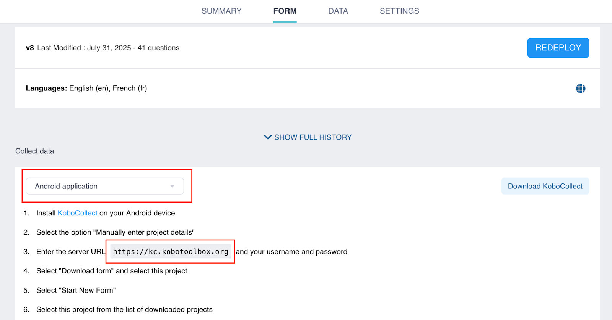

Search the knowledge base, browse our resources, and visit our forum for more detailed information
Read in English | Lire en français | Leer en español آخر تحديث: 19 سبتمبر 2025
KoboCollect هو تطبيق KoboToolbox مجاني ومفتوح المصدر مصمم لجمع البيانات على أجهزة Android المحمولة. تجعل إمكانياته للعمل دون اتصال بالإنترنت وتوافقه مع معظم أجهزة Android منه مثالياً للعمل الميداني.
قبل استخدام KoboCollect، يجب عليك إنشاء حساب KoboToolbox على موقع KoboToolbox ونشر نماذج جمع البيانات.
يغطي هذا المقال كيفية الاتصال بـ KoboCollect لجمع البيانات. لمعرفة المزيد حول تكوين إعدادات KoboCollect وجمع البيانات باستخدام التطبيق، راجع تخصيص إعدادات KoboCollect وجمع البيانات باستخدام KoboCollect.
يمكن تنزيل تطبيق KoboCollect من متجر Google Play لأجهزة Android التي تعمل بالإصدار 5 أو أحدث.
ملاحظة: نوصي باستخدام أحدث إصدار من التطبيق (v2025.2)، حيث يتضمن ميزات وإصلاحات للأخطاء غير متوفرة في الإصدارات الأقدم.
لجمع البيانات باستخدام KoboCollect، يجب عليك تكوين تطبيق KoboCollect على جهازك المحمول للاتصال بخادم KoboToolbox. يتيح لك ذلك تنزيل النماذج المنشورة من KoboToolbox وإرسال البيانات المجمعة مرة أخرى إلى الخادم.
للاتصال بـ KoboCollect بخادم KoboToolbox، ستحتاج إلى رابط KoboCollect واسم المستخدم وكلمة المرور. بعد الإعداد اليدوي الأولي، يمكنك إنشاء رمز QR لتكوين الأجهزة الأخرى.
ملاحظة: في تطبيق KoboCollect، تُسمى حسابات المستخدمين المشاريع.
لإعداد KoboCollect يدوياً، ستحتاج إلى تحديد رابط KoboCollect الخاص بك. هذا الرابط خاص بـ KoboCollect ويختلف عن الرابط المستخدم للوصول إلى حساب KoboToolbox الخاص بك.
يعتمد رابط KoboCollect الخاص بك على خادم حسابك:
خادم KoboToolbox |
رابط KoboCollect |
|---|---|
الخادم العالمي لـ KoboToolbox |
https://kc.kobotoolbox.org/ |
خادم الاتحاد الأوروبي لـ KoboToolbox |
https://kc-eu.kobotoolbox.org/ |
الخادم الخاص |
فريد لكل منظمة |
يمكنك أيضاً العثور على رابط KoboCollect على منصة KoboToolbox. انتقل إلى علامة تبويب النموذج في مشروعك واختر تطبيق Android من القائمة المنسدلة جمع البيانات. سيتم إدراج رابط KoboCollect في الخطوة 3.

بمجرد تحديد رابط KoboCollect الخاص بك، اتبع هذه الخطوات لإعداد اتصال الخادم:
افتح تطبيق KoboCollect.
اختر إدخال تفاصيل المشروع يدوياً.
أدخل رابط KoboCollect واسم المستخدم وكلمة المرور.
انقر على إضافة.
عند اكتمال التكوين، ستظهر القائمة الرئيسية.
يؤدي استخدام رمز QR إلى تكوين KoboCollect بكفاءة على أجهزة متعددة بنفس إعدادات الخادم (رابط KoboCollect واسم المستخدم وكلمة المرور وإعدادات تكوين المشروع). يمكن أن يكون هذا مفيداً لتجنب تكرار الخطوات اليدوية أو لتكوين أجهزة جامعي البيانات دون مشاركة كلمات مرور الحساب.
ملاحظة: لاستخدام طريقة رمز QR، يجب عليك أولاً تكوين جهاز واحد يدوياً ثم نسخ رمز QR المُنشأ إلى الأجهزة الأخرى.
للوصول إلى رمز QR الخاص بك:
انتقل إلى قائمة المشاريع واختر المشروع الذي تريد نسخه.
انقر على الإعدادات.
اختر إدارة المشروع.
انقر على إعادة التكوين باستخدام رمز QR.
اختر رمز QR. سيظهر رمز QR الخاص بك على الشاشة.
التقط لقطة شاشة لرمز QR لمشاركته لإعداد الأجهزة الأخرى. يمكنك أيضاً العودة إلى هذه القائمة في أي وقت للوصول إلى رمز QR مرة أخرى.
لتكوين الأجهزة الأخرى باستخدام رمز QR:
افتح KoboCollect على الجهاز الذي تريد إعداده.
انقر على التكوين باستخدام رمز QR.
امسح رمز QR باستخدام كاميرا الجهاز، أو انقر على النقاط الثلاث في الزاوية العلوية اليمنى واختر استيراد رمز QR لاستخدام لقطة شاشة محفوظة على جهازك.
إذا نجح الإعداد، سيتم تكوين التطبيق تلقائياً.
ملاحظة: يحتوي رمز QR على بيانات اعتماد حسابك، بما في ذلك كلمة المرور الخاصة بك. سيكون لأي شخص يمسحه نفس أذونات الوصول الخاصة بالحساب الذي تم إنشاؤه منه. إذا كنت تريد فقط أن يقوم شخص ما بجمع البيانات (على سبيل المثال، جامع بيانات)، تأكد من أن الحساب المستخدم لإنشاء رمز QR لا يحتوي على أذونات لعرض البيانات أو تحريرها أو حذفها. للحفاظ على أمان بياناتك، تجنب مشاركة رموز QR من الحسابات ذات الوصول الكامل.
يمكن للمستخدمين ربط حسابات KoboToolbox متعددة والتبديل بسهولة بين المشاريع المختلفة داخل نفس تطبيق KoboCollect، بغض النظر عما إذا كانت على نفس الخادم أو على خوادم مختلفة.
لإعداد مشاريع إضافية في KoboCollect:
انقر على أيقونة المشروع الموجودة في الزاوية العلوية اليمنى.
في قائمة المشاريع، انقر على إضافة مشروع.
قم بإعداد مشروع جديد باستخدام الطريقة اليدوية أو عن طريق مسح رمز QR.
عند اكتمال التكوين، ستظهر القائمة الرئيسية.
انقر على أيقونة المشروع لفتح القائمة. يجب أن يكون كلا المشروعين مرئيين الآن.
يمكن إضافة مشاريع إضافية عن طريق تكرار نفس العملية. سيتم إدراج المشروع النشط أولاً في قائمة المشاريع. للتبديل إلى مشروع مختلف، ما عليك سوى النقر على أيقونته.
لمعرفة المزيد حول تغيير كيفية عرض المشاريع لسهولة التعرف عليها والتبديل بينها، راجع إعدادات عرض المشروع.
من الممكن أيضاً الوصول إلى المشاريع في KoboCollect بدون كلمة مرور. يعد هذا مفيداً للمشاريع التي تضم العديد من جامعي البيانات، حيث يتجنب الحاجة إلى إنشاء حسابات فردية أو مشاركة بيانات الاعتماد.
ملاحظة: يتطلب هذا النهج تمكين "السماح بالإرسالات إلى هذا النموذج بدون اسم مستخدم وكلمة مرور" لنماذجك. لمعرفة المزيد حول إعدادات المشاركة على مستوى المشروع، راجع مشاركة المشاريع باستخدام إعدادات مستوى المشروع.
للاتصال بـ KoboCollect بدون مصادقة:
قم بتمكين "السماح بالإرسالات إلى هذا النموذج بدون اسم مستخدم وكلمة مرور" لنماذجك.
[اختياري] أنشئ حساب KoboToolbox مخصصاً لجامعي البيانات وشارك نماذجك مع هذا الحساب.
اتصل بـ KoboCollect باستخدام بيانات الاعتماد التالية:
الرابط: رابط KoboCollect متبوعاً باسم مستخدم الحساب (https://[kobocollect_url]/[username])
اسم المستخدم: (اتركه فارغاً)
كلمة المرور: (اتركها فارغة)
يتيح هذا النهج للمستخدمين تنزيل وإرسال البيانات إلى أي نماذج مشتركة مع username التي لا تتطلب مصادقة.
للتمييز بين جامعي البيانات وتتبع الإرسالات، يمكنك أن تطلب من جامعي البيانات إدخال اسم مستخدم مخصص ورقم هاتف وعنوان بريد إلكتروني في إعدادات هوية المستخدم والجهاز.
ملاحظة: يمكن أن يكون هذا النهج مفيداً عندما يستخدم حسابك المصادقة الثنائية، حيث لن تتمكن من تنزيل النماذج أو إرسال البيانات باستخدام الطريقة العادية.
Did you find what you were looking for? Was the information clear? Was anything missing?
Share your feedback to help us improve this article!
KoboToolbox is maintained by Kobo Inc.